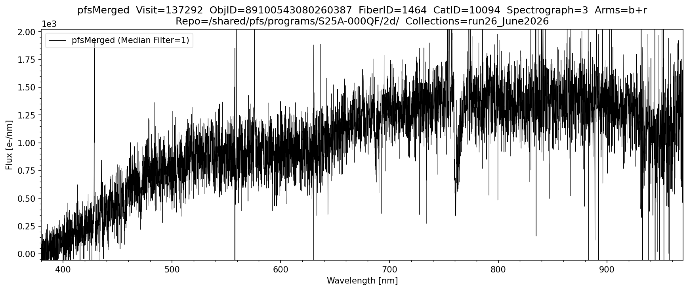

pfsMerged
Overview
pfsMerged combines the spectra from all arms into one merged spectrum per object. The arm-merged spectra of all fibers from a single visit (exposure) are then stored in one file.
It is wavelength-calibrated and sky-subtracted, but not flux-calibrated.
The format is identical to pfsArm, with two differences:
- Flux units are electrons per nm (rather than electrons)
- The
WAVELENGTHarray may be a single shared array applied to all fibers (rather than one per fiber), if all fibers share the same wavelength sampling
Filename format: pfsMerged_PFS_{visit}_{collection}.fits
Example from proposal S25A-000QF, visit 137292 on the Science Platform:
/shared/pfs/programs/S25A-000QF/2d/run26_June2026/pfsMerged/20260111/137292/
pfsMerged_PFS_137292_run26_June2026.fits
FITS structure:
| HDU | Name | Type | Units | Dimensions |
|---|---|---|---|---|
| #0 | PDU | Header | — | — |
| #1 | FIBERID | Image | — | NFIBER |
| #2 | WAVELENGTH | Image | nm (vacuum) | NROW × NFIBER (or NROW if shared) |
| #3 | FLUX | Image | electrons/nm | NROW × NFIBER |
| #4 | MASK | Image | bitmask | NROW × NFIBER |
| #5 | SKY | Image | electrons/nm | NROW × NFIBER |
| #6 | NORM | Image | electrons/nm | NROW × NFIBER |
| #7 | COVAR | Image | (e/nm)² | NROW × 3 × NFIBER |
| #8 | CONFIG | Binary table | — | 1 row (pfsDesignId, visit) |
| #9 | NOTES | Binary table | — | NFIBER rows |
Viewing pfsMerged Spectra
The following plots the pfsMerged spectrum of a single object from a single visit. This is the fully merged spectrum of all arms (blue+red+NIR) combined. Instantiate Butler by providing the datastore repo and collections. Specify a visit and objid to plot that object directly, or use browse_index to step through all science objects in a visit sorted by objId. The specific arms to be shown can be selected and the spectrum can be smoothed using a median filter if desired.
import numpy as np
import matplotlib.pyplot as plt
from scipy import ndimage
from lsst.daf.butler import Butler
from pfs.datamodel import TargetType
# ==== USER-DEFINED PARAMETERS ====
repo = "/shared/pfs/programs/S25A-000QF/2d/" # path to the 2d DRP repository
collections = "run26_June2026" # collection name
objid = 89100543080260387 # If set, plots this object directly. If None uses browse_index
visit = 137292 # If None, first VISIT containing objid is used automatically
browse_index = 0 # Used only if objid is None; steps through SCIENCE objects in VISIT by index
MEDIAN_FILTER_SIZE = 1 # 1 = no filtering, increment for smoothing as desired
arms = ['b', 'r'] # options: 'b', 'r', 'n' or any combination of arms to plot
# ==== PFSMERGED PLOTTING FUNCTION ====
def plot_pfsmerged(repo, collections, visit, objid, browse_index, MEDIAN_FILTER_SIZE, arms):
ARM_RANGES = {
'b': (380, 650),
'r': (630, 970),
'n': (940, 1260),
}
butler = Butler(repo, collections=collections)
all_visits = sorted({ref.dataId['visit'] for ref in butler.registry.queryDatasets('pfsMerged')})
# ==== RESOLVE VISIT AND OBJID ====
if visit is not None and objid is not None:
# Both provided — use directly
pfsConfig = butler.get('pfsConfig', dict(visit=visit))
elif visit is not None and objid is None:
# Visit given, select by browse_index
pfsConfig = butler.get('pfsConfig', dict(visit=visit))
pfsConfigScience = pfsConfig.select(targetType=TargetType.SCIENCE, fiberStatus=1)
all_objids = sorted(set(int(o) for o in pfsConfigScience.objId))
objid = all_objids[browse_index]
print(f"Browse index {browse_index} of {len(all_objids)-1} → objId={objid}")
elif visit is None and objid is not None:
# objId given, search all visits
print(f"Searching {len(all_visits)} visits for objId={objid} ...")
found_visit = None
for i, v in enumerate(all_visits):
print(f" Checking visit {v} ({i+1}/{len(all_visits)}) ...", end='\r')
pfsConfig_v = butler.get('pfsConfig', dict(visit=v))
if (pfsConfig_v.objId == objid).any():
found_visit = v
pfsConfig = pfsConfig_v
break
print()
if found_visit is None:
raise ValueError(f"objId {objid} not found in any visit in collections '{collections}'")
visit = found_visit
print(f"Found objId={objid} in visit={visit}")
else:
# Neither provided — use browse_index on first visit
visit = all_visits[0]
pfsConfig = butler.get('pfsConfig', dict(visit=visit))
pfsConfigScience = pfsConfig.select(targetType=TargetType.SCIENCE, fiberStatus=1)
all_objids = sorted(set(int(o) for o in pfsConfigScience.objId))
objid = all_objids[browse_index]
print(f"Auto-selected visit={visit} | Browse index {browse_index} of {len(all_objids)-1} → objId={objid}")
# ==== LOOKUP FIBERID, CATID, SPECTROGRAPH ====
mask = pfsConfig.objId == objid
if not mask.any():
raise ValueError(f"objId {objid} not found in pfsConfig for visit {visit}")
fiberid = pfsConfig.fiberId[mask][0]
catid = pfsConfig.catId[mask][0]
spectrograph = pfsConfig.spectrograph[mask][0]
print(f"ObjId={objid} Visit={visit} FiberID={fiberid} CatID={catid} Spectrograph={spectrograph}")
# ==== LOAD DATA ====
pfsMerged = butler.get('pfsMerged', visit=visit).select(fiberId=fiberid)
wavelength = pfsMerged.wavelength[0]
flux = pfsMerged.flux[0]
mask_arr = pfsMerged.mask[0]
# ==== ARM MASK ====
arm_mask = np.zeros(len(wavelength), dtype=bool)
for arm in arms:
lo, hi = ARM_RANGES[arm]
arm_mask |= (wavelength >= lo) & (wavelength <= hi)
xlim_lo = min(ARM_RANGES[arm][0] for arm in arms)
xlim_hi = max(ARM_RANGES[arm][1] for arm in arms)
# ==== MASK BAD PIXELS ====
pixels_bad = (mask_arr & pfsMerged.flags.get('BAD', 'CR', 'SAT', 'NO_DATA')) != 0
pixels_good = arm_mask & ~pixels_bad
# ==== YLIM ====
flux_in_range = flux[pixels_good]
p2, p98 = np.nanpercentile(flux_in_range, [2, 98])
span = p98 - p2
ylim_lower = p2 - 0.05 * span
ylim_upper = p98 + 0.15 * span
# ==== PLOT ====
arms_label = '+'.join(arms)
fig, ax = plt.subplots(figsize=(12, 5))
fig.subplots_adjust(top=0.88, bottom=0.1, left=0.07, right=0.97)
ax.plot(wavelength[pixels_good],
ndimage.median_filter(flux[pixels_good], size=MEDIAN_FILTER_SIZE),
linewidth=0.5, color='black',
label=f'pfsMerged (Median Filter={MEDIAN_FILTER_SIZE})')
ax.set_xlim([xlim_lo, xlim_hi])
ax.set_ylim([ylim_lower, ylim_upper])
ax.ticklabel_format(axis='y', style='sci', scilimits=(0, 0))
ax.set_title(f'pfsMerged Visit={visit} ObjID={objid} FiberID={fiberid} CatID={catid} Spectrograph={spectrograph} Arms={arms_label}\n'
f'Repo={repo} Collections={collections}')
ax.legend(loc='upper left', fancybox=True, framealpha=0.5)
ax.minorticks_on()
ax.set_xlabel('Wavelength [nm]')
ax.set_ylabel('Flux [e-/nm]')
plt.savefig(f'pfsMerged_{collections}_{objid}.png', dpi=150, bbox_inches='tight')
plt.show()
# ==== RUN ====
plot_pfsmerged(
repo = repo,
collections = collections,
visit = visit,
objid = objid,
browse_index = browse_index,
MEDIAN_FILTER_SIZE = MEDIAN_FILTER_SIZE,
arms = arms,
)
Output:
